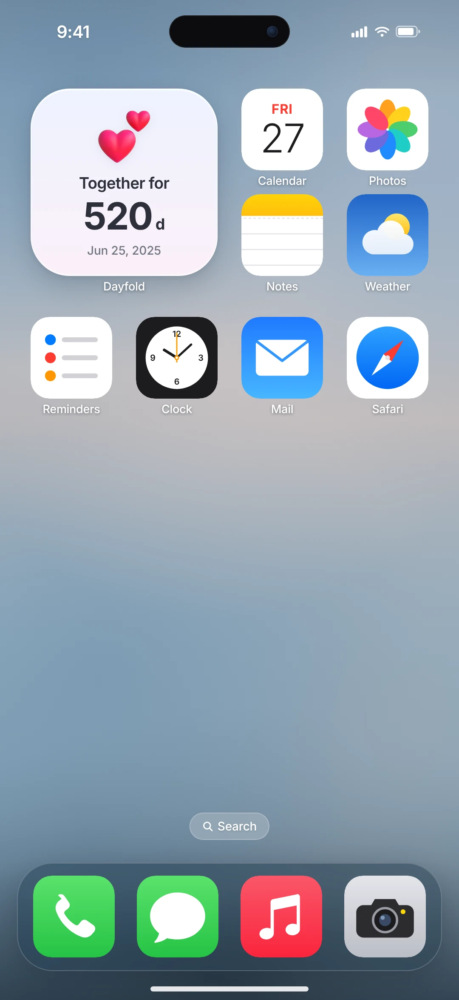
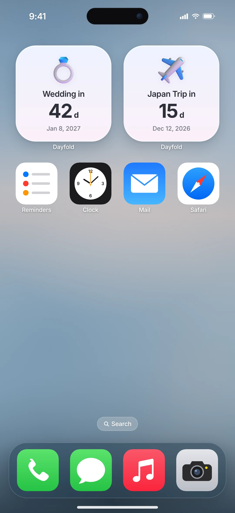

Fold a page. Remember a day.
Countdown & Anniversary Widgets for Your iPhone Lock Screen
Countdowns and anniversaries as beautiful cards — right on your Home Screen and Lock Screen.
Free · Dayfold Pro optional · No account needed
Past or future
Count down, or count up.
Days until the wedding. Days since graduation.
See the guides: days since a birth date, days together, a birthday countdown, a wedding or trip, an exam, New Year 2027, or how to add a countdown to the Lock Screen.


Card styles
A card for every day.
Emoji, Flip Calendar, Ticket, Pixel, Neon, Retro LCD and more.
Widgets
Always in view.
Pin a moment to your Home Screen or Lock Screen.

Free
- 4 active moments
- 3 card styles
- Widgets
Dayfold Pro · monthly or lifetime
- Unlimited moments
- Every card style
- Advance reminders & extra milestones
FAQ
Does Dayfold count down and count up?
Yes. For a future date, Dayfold shows how many days remain. For a past date, it shows how many days have passed. You can pin either kind of moment to a Home Screen or Lock Screen widget.
Can I put Dayfold on my iPhone Lock Screen?
Yes. Dayfold offers Lock Screen widgets and small or medium Home Screen widgets. Dayfold requires iOS 17 or later. After you create a moment, add the widget from the Lock Screen (touch and hold, tap Customize, tap Add Widgets) or from the Home Screen widget gallery.
Is Dayfold free?
Yes. Dayfold is free to download. You can keep four active moments and use the Emoji, Flip Calendar and Ticket styles without paying. Dayfold Pro is optional, as a monthly plan or a one-time Lifetime purchase, and unlocks unlimited moments, every card style, advance reminders and extra milestones.
Do I need an account? Does it sync?
No account is required. Moment content is stored on your iPhone. Cloud sync is not available.
Can birthdays and anniversaries repeat every year?
Yes. Dayfold can repeat birthdays and anniversaries yearly, so you do not have to create a new moment each year.
What’s the difference between a birthday countdown and a baby-age or days-together widget?
A birthday countdown shows how many days remain until the next birthday. A baby-age moment counts the days since a birth date. A days-together moment counts the days since you met. You can keep more than one of these at once.
More from Foca Studio

Guides
 Guide · Countdown
Birthday countdown widget
Days until a birthday, with optional yearly repeat.
Read →
Guide · Countdown
Birthday countdown widget
Days until a birthday, with optional yearly repeat.
Read →

Guide · Count up Days together and anniversaries Count the days since you met, or count down to an anniversary. Read → Guide · Countdown
Exam countdown widget
Put an exam date on your Lock Screen or Home Screen.
Read →
Guide · Countdown
Exam countdown widget
Put an exam date on your Lock Screen or Home Screen.
Read →

Guide · Countdown Wedding or trip countdown The same widget for a wedding day or the day a trip starts. Read → Guide · 2027
New Year 2027 countdown
Count down to 1 January 2027, then keep the day count if you want.
Read →
Guide · Nov 17, 2026
Christmas countdown on your Lock Screen
Create a countdown for December 25, 2026, then add it to your Lock Screen or Home Screen.
Read →
Guide · 2027
New Year 2027 countdown
Count down to 1 January 2027, then keep the day count if you want.
Read →
Guide · Nov 17, 2026
Christmas countdown on your Lock Screen
Create a countdown for December 25, 2026, then add it to your Lock Screen or Home Screen.
Read →